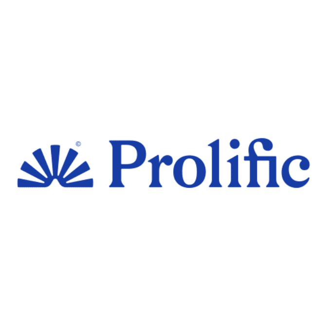

The University of Michigan-Flint
How is computer-mediated consent exchanged among aurally and visually disabled populations?

Role
UX Researcher
Duration
May 2024 - Present
Team
3 UX Researcher
1 Mentor
Project Overview
Last summer, I spent 10 weeks at the University of Michigan-Flint conducting UX research. Collaborating with 3 researchers and a mentor, I immersed myself in literature reviews, developed a comprehensive study plan, conducted a survey, and synthesized the findings by creating key themes. As this was my first experience in academia, it was a steep learning curve, but working hands-on with such a supportive team was incredibly rewarding.
Outcomes
From desigining the study to analyzing the data, I created an 80+ question survey with my team that is shared to 200 participants from the aurally and visually disabled populations. I'm currently analyzing the rest of the data to create a theme story for publication.
Research Timeline
- Become familiar with the format or research papers by analzying 10+ literature reviews
- Reviewed a UX methodological toolbox to understand what method is best suited for our study design
- Clarified long-term product goal for our 10 weeks

- Create a study plan to recruit at least 20 participants
- Define recruitment criteria - aurally and visually disabled populations with online dating experience
- Determine research platforms 
- Choose method - surveys
- Submit IRB
What was estimated to be done in a week ended up taking almost half of the program lenth to be completed.
- Determining survey structure - question flow, consent form, story writing
- Constant iterations - based on IRB feedback, I revised survey questions

More literature was reviewed to understand a wide variety of data analysis method
I supported the decision for RTA due to its flexible appraoch in understanding
a diverse quantiative data with a curious mindset and the importance of identifying
recurring patterns and themes from our participant interactions.
Codingbook
I supported the decision for RTA due to its flexible appraoch in understanding
a diverse quantiative data with a curious mindset and the importance of identifying
recurring patterns and themes from our participant interactions.
Impact and Results

Quantitative Improvements
- • 40% increase in international user engagement
- • 25% improvement in task completion rates for non-native users
- • 30% reduction in cart abandonment rate
- • 20% increase in average session duration
These improvements were achieved through implementing localized homepage layouts, culturally adapted product categorization, and region-specific payment options based on our research findings.
Reflections and Learnings
- • Gained practical experience in cross-cultural UX research methodologies
- • Developed skills in synthesizing qualitative and quantitative data
- • Improved ability to communicate research findings to diverse stakeholders
- • Learned to balance business goals with user needs in a global context
- • Enhanced cultural sensitivity and awareness in UX design